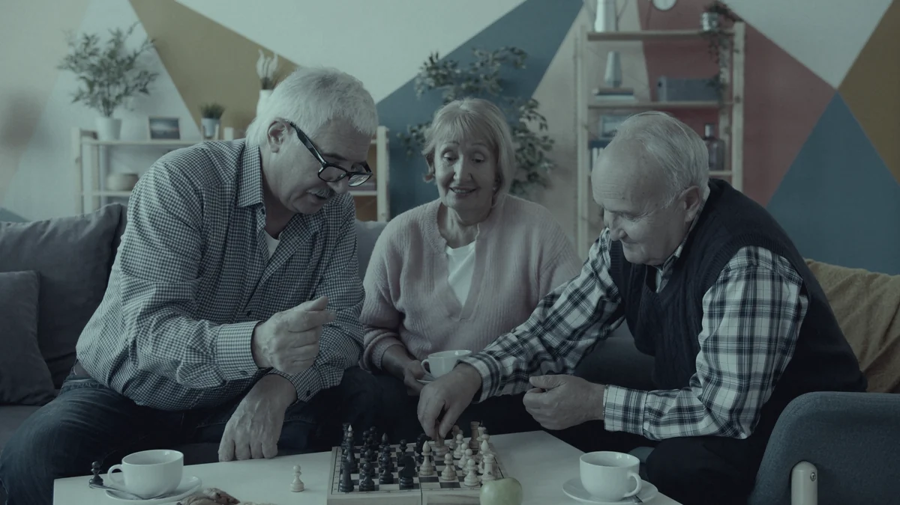

Opérationnel
Power BI
Infographie sur une page, barres comparatives, carte, indicateurs clés.
- Challenge Dataviz 2026
- Formation
Disponible en alternance dès septembre 2026 Île-de-France
Data Analyst en formation BUT Science des Données
Étudiant à l’IUT de Paris – Rives de Seine (Université Paris Cité), je transforme des données brutes en analyses claires et en décisions.
01 Profil
Losseni Zouri
20 ans · Paris
Qui suis-je
Étudiant en 2e année de BUT Science des Données, parcours Exploration et Modélisation Statistique (EMS), à l’IUT de Paris – Rives de Seine (Université Paris Cité), je me forme à l’analyse statistique, à la gestion de bases de données et à la visualisation de données.
Mon approche est analytique et orientée décision : partir d’une question métier, explorer les données, identifier des tendances et restituer des résultats clairs, exploitables par ceux qui décident.
Délégué de mon groupe depuis la 1re année, j’ai développé l’écoute, la synthèse et la prise de parole face à des responsables pédagogiques - des qualités que je mets au service d’une équipe Data dès septembre 2026.
Partir d’une question métier précise, définir le périmètre et les indicateurs qui comptent.
Collecter, nettoyer, structurer (Excel, SQL) et vérifier la cohérence avant toute analyse.
Statistiques univariées et bivariées, exploration des tendances, des écarts et des exceptions.
Des visualisations lisibles (Power BI, Excel) et une synthèse orientée décision.
02 Parcours
Fév. 2024
Air France · Roissy-Charles-de-Gaulle
Travail en équipe dans un environnement opérationnel exigeant : enregistrement des bagages, gestion des imprévus et recherche de solutions en temps réel.
Fév. 2024
Lycée Louis Armand · Paris 15e
Participation à l’organisation de la journée portes ouvertes. Communication et mise en relation d’élèves en situation de handicap avec Air France.
2025
Lycée Louis Armand → IUT de Paris – Rives de Seine, Université Paris Cité
Spécialité Systèmes d’information et de gestion, puis choix du parcours Exploration et Modélisation Statistique.
2025 → aujourd’hui
IUT de Paris – Rives de Seine
Représentation du groupe auprès de l’équipe pédagogique : recueil et synthèse des retours étudiants, prise de parole en conseil de département.
Mai 2026
IUT de France × INSEE
Une journée, une équipe de quatre, une infographie Power BI sur l’évolution démographique des 18 régions françaises. Voir le projet.
Sept. 2026
Île-de-France · BUT Science des Données, 2e année
Le prochain point de la courbe. Discutons-en.
03 Compétences
Pas de pourcentages arbitraires : un niveau honnête pour chaque outil, et les contextes où il a réellement servi.
Infographie sur une page, barres comparatives, carte, indicateurs clés.
Nettoyage, agrégats par région, tris croisés, contrôle de cohérence, graphiques.
Univariées et bivariées, exploration, interprétation, restitution orientée décision.
Conception de questionnaires exploitables, collecte et export des réponses.
Répartition démographique par région, bulles proportionnelles, lecture territoriale.
Requêtage, jointures, agrégations, gestion de bases de données.
Traitement statistique de tables, procédures descriptives.
Premiers scripts d’analyse et de manipulation de données ; approfondissement en 2e année.
Chaque ligne renvoie au contexte où elle a servi, pas à un mot-clé.
Opérationnel utilisé en projet En formation cours et TP en cours Notions premiers pas
04 Projets
Deux projets menés en conditions réelles.

Prochainement
SQL, Python et R : d’autres projets s’ajouteront au fil de la 2e année et de l’alternance.
05 Contact
Data Analytics · Île-de-France · BUT Science des Données, 2e année. Un e-mail suffit : je réponds rapidement, avec CV et disponibilités.